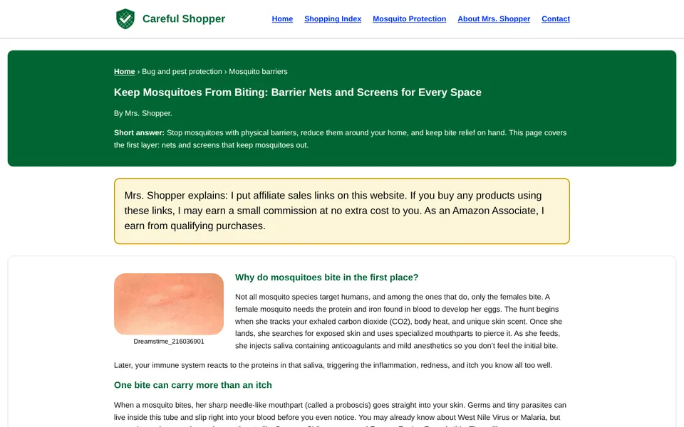

Version 1 · Strict
Built to the style sheet
Every value comes from the Careful Shopper Style Sheet and the blog's zone list.
- Verdana only, the listed colors only, sizes in rem
- Nine zones in order, one column, no sidebar
- Exact disclosure above every group of product links
- Three cards per row on desktop, one on a phone, Menu button below 60rem